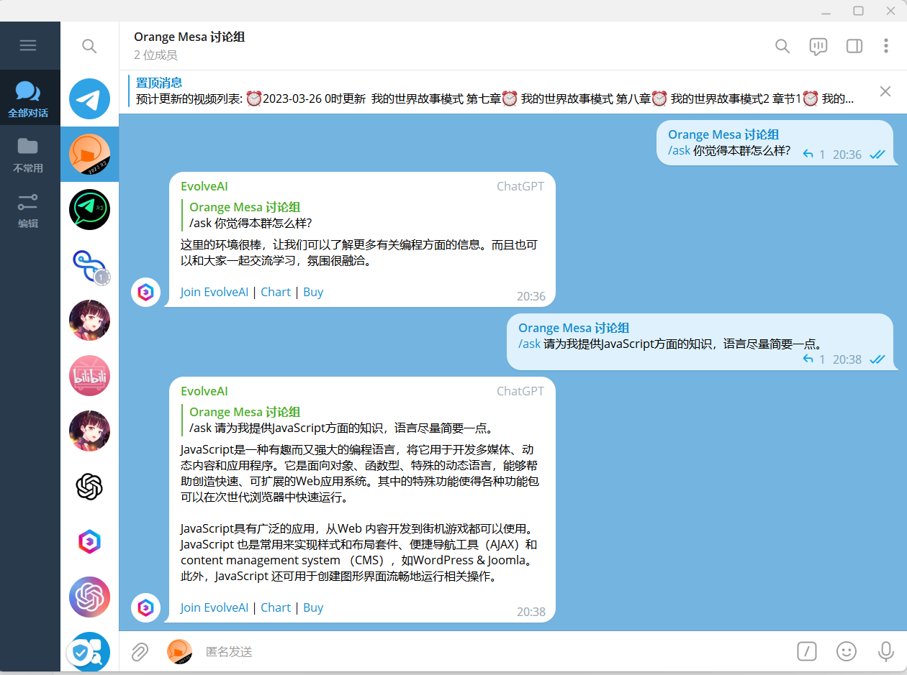

Orange Mesa : Lite
网站应急页面
[公告]Orange Mesa 将使用自己风格的网站！
由于过量的使用模板导致网页在上传Github的过程中出现了一点问题，本网站不得不重新制作一个新的网页，在此期间内网站一直会保持这个样子不变。更新后的Orange Mesa将拥有自己的风格！新的Orange Mesa应该会在不久之后会和你见面的...
此外，请记住我们的域名:orangemesa.ztpan.cf(如果跳转的是百度请使用http://orangemesa.ztpan.cf/documentation/index.html)，以免遗忘！
Orange Mesa将会从原来的未完成网页吸取灵感，并为此进行大幅度的修改。请时刻关注我的网站动向！
[公告]账号改名
我的bilibili账号将于几天后更名为Nucleo-Galattico，是意大利语中的"银河核心(Galaxy core)"。改名的原因是我希望拥有一个个性一点的名字，所以我使用了这个名字作为我的新名字(之前想改名为OrangeMesa_Offical，后来想想还是算了)。
"hl-gordon"这个名字从我当UP主以来陪伴我两年多了，所以部分账号还是用着之前的旧名称。
[群聊增加] Orange Mesa : Telegram 2.0
相对于上次的1.0，在2.0中本群加入了GPT机器人和功能性机器人，这会让群聊更加活跃并易于管理，在一定程度上隔离了广告机器人账号。
在Telegram群聊中你会收到Nucleo-Galattico的更新动向、视频链接、拖更公告以及本网站的实时动向！频道内可能无法发送自己的表态，但是加群却可以跟群里面的其他群友聊天！
你只需要一句 "/ask + 你想问AI的内容" 就可以得到GPT机器人的建议！在给你一个参考方案时也增加了本群热度。
现在就加入体验吧! >>> 加入Telegram聊天群组 加入Telegram频道
※请不要相信任何人发送的广告，被骗了概不负责。
